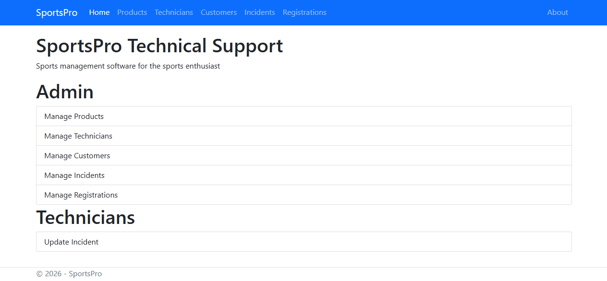
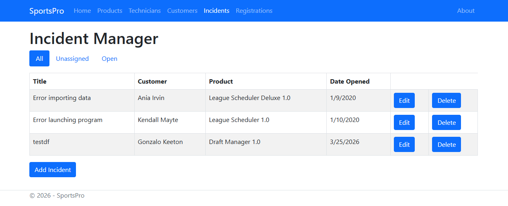
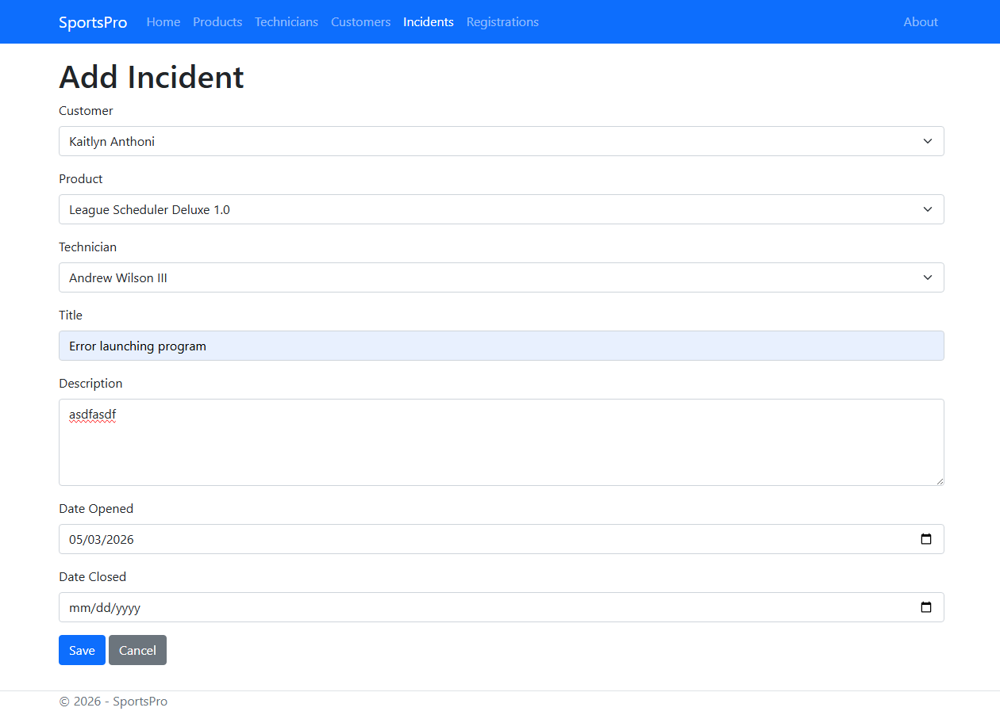

SportsPro Technical Support is an ASP.NET Core MVC application built for CIS 296. The project demonstrates a database-backed support management system where users can maintain product, customer, technician, and incident records through standard MVC list, add, edit, and delete workflows.
The application uses Entity Framework Core with a SQL Server LocalDB database. It includes model classes, controllers, Razor views, validation attributes, database migrations, seeded sample data, and Bootstrap-based layout styling. A more advanced part of the project is the technician incident workflow, where the selected technician is stored in session and then used to display only that technician's open incidents.
Include()This sample shows the incident list logic from the project. The controller builds an Entity Framework query that includes related customer, product, and technician data, then filters the incident list depending on the selected status.
[HttpGet]
[Route("Incidents")]
public ViewResult List(IncidentListViewModel model)
{
IQueryable<Incident> query = context.Incidents
.Include(i => i.Customer)
.Include(i => i.Product)
.Include(i => i.Technician);
if (model.IncidentStatus == "unassigned")
{
query = query.Where(i => i.TechnicianID == -1);
}
else if (model.IncidentStatus == "open")
{
query = query.Where(i => i.DateClosed == null);
}
model.Incidents = query.OrderBy(i => i.DateOpened).ToList();
return View(model);
}This code represents one of the main MVC patterns used in the application: query the database through the injected context, include related records needed by the view, apply filtering logic, store the result in a view model, and return that model to a Razor view.


